镜像的世界：关于巴黎叙事中刘国梁形象的断想
前言（省流）
镜像就是把别人对刘国梁做的事变成刘国梁对别人做的事，把别人的性格行为说成刘国梁的性格行为，中间以一些真真假假和逻辑错误弥合，但本质上是把别人的脏水往刘国梁身上泼。比如你可以从欺师灭祖这个点开始想，当然我觉得623是刘国梁站蔡振华应该显而易见，但是按照巴黎叙事的说法，刘国梁不站蔡振华就是欺师灭祖，那么是谁在623里没有站刘国梁呢？原来他（或他的团队）也觉得他欺师灭祖啊。没有人比冤枉你的人更清楚你有多冤，也没有人比洗白你的人更知道你有多黑。把刘国梁的骂名提炼出来，许多都能在他身边人身上找到对应，这就是我把它称作“镜像”的原因。不过并不是所有都有对应，毕竟镜像的好处在于人不能想象认知以外的事，自己做的事总是在认知内的，但有一些经典手段也不需要借力，因此目前我不认为所有骂名都能找到对应（希望现实不要打我脸，我其实就在等少数人会不会有新动作了）。
正文
2024年9月左右，在B站、YouTube等平台集中出现了一批话术相似的视频，其中给刘国梁安上的罪名有一手遮天、欺师灭祖、逼退冠军等等。时至今日，在B站等平台搜索与刘国梁相关的比赛、节目，或是带刘国梁tag视频的相关推荐中，都频繁出现类似视频，其规模和集中度显然不寻常。
类似的视频构成了一套叙事，我以下称为“巴黎叙事”。巴黎叙事围绕着许多方面，有的有理，比如国乒小将们的现状比二十年前大有不如（不过巴黎叙事更爱与十年前相比），有的片面，比如对部分球员的评价放大一部分而无视另一部分，有的则完全颠倒黑白。而在我看来，巴黎叙事中围绕刘国梁的部分，几乎全是片面和颠倒黑白的，且后者居多。
以某一个百万级播放量、至今六千多弹幕的视频为例，不说乒乓球领域它到处都是错误，就连政策层面运动管理中心与协会脱钩的事情，以及商业化方向的基本事实，都是反的——它想说刘国梁为了一手遮天，把乒协变成了独立于乒羽中心的组织，并且通过商业化为自己巩固地位，扩展权力。①（这个圈号是为了后面引用这一观点）
然而实际上乒协是怎么从吉祥物变成后来的实体化组织的呢？
1. 乒协实体化与18年刘国梁重回国家队
2015年中共中央办公厅、国务院办公厅印发《行业协会商会与行政机关脱钩总体方案》，2019年发改委等多部门联合引发《关于全面推开行业协会商会与行政机关脱钩改革的实施意见》，脱钩名单有包括中国乒乓球协会在内的795个行业协会商会。脱钩要求“坚持‘应脱尽脱’的改革原则。凡是符合条件并纳入改革范围的行业协会商会，都要与行政机关脱钩，加快成为依法设立、自主办会、服务为本、治理规范、行为自律的社会组织。”
然而时至2018年，乒协实体化不说进展缓慢，至少也是毫无动静，依旧是19个副主席的吉祥物组织，主席还是个和“行政脱钩”四个字毫无关系的、兼任多个体育项目管理者、当体育总局副局长的妥妥的体制内官员，这和实体化的要求相去甚远。
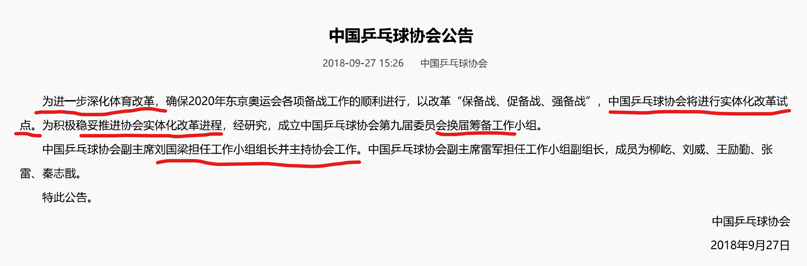
中国乒协当时的章程规定乒协主席每届任期4年且连任不超过两届，会员代表大会同样每届任期4年，延期换届不得超过一年。而2018=2009+2x4+1，也就是说延长的那一年也到了，中国乒协必须要换届，这就是上面图中“换届小组”的由来。和一般的换届不同的是，这一届根据政策要求，必须要完成实体化脱钩任务。此外，由于孔令辉、刘国梁、秦志戬、马琳等相继离开国家队，教练组的结构和责任还很模糊；当时一位未透露姓名的主力队员表示人心都散了；男女线成绩波动，作为2018“期末考试”的仁川总决赛，派出除伤退的马龙之外的所有主力，却只拿回了1项冠军（女单）；外协张本智和、伊藤美诚等新星崛起，更加大了布达佩斯世乒赛、东京奥运会的备战压力（伊藤美诚当时的威胁力达到让中国女队的东京名单成为明牌的程度）；何况，新加进奥运一年多的混双项目，国乒还没有开始选配上奥运的组合，而那一代主力是从小就没怎么练过混双的……
也就是说，新一届的乒协班子，尤其是乒协主席，既要完成乒协实体化的政策任务，又要完成国家队、乒协核心的奥运争光任务，既要能在缺人缺制度的乒协摊子上拉起一个新班子、推进乒协改革，又要能够解决上一段说的这么多国家队的问题，备战奥运，决胜东京。
所以我直说，这个人选除了刘国梁我想不出第二个人。如果你觉得除了刘国梁还有谁，我想想，如果这个人是乒乓球领域的，那要有这样的影响力肯定是我们熟知的，反正我想不出来（不会有人觉得老蔡可以吧？五分离之一就是人事管理分离，何况老蔡还能在乒乓队一线重新干起来，和老蔡还会留恋or需要中国乒协的位置，一时间分不清哪个更离谱）。如果这个人不是乒乓球领域的，信从其他领域天降猛人能搞定这个摊子不如信我是秦始皇，vivo50吧。
因此，巴黎叙事在谈到2018年刘国梁重回国家队这件事情的时候，根本不会按照我上面说的这样去讲。如果你认同我说的，除了刘国梁没有第二个适合在这个时候上任乒协主席的人，那么你应该意识到，刘国梁回去到底是为了蔡，还是为了苟，还是为了自己，还是谁也不为，又或者是为了乒乓球，总之都不重要，重要的是此时乒乓球需要刘国梁超越了刘国梁需要乒乓球。刘国梁不回去，也有的是办法不失为富家翁，然而在这个时候他选择了回去，回到自己已经献出青春和健康的地方继续奉献，就像他一贯的选择，化危机为转机，去迎接新的挑战。
善战者无赫赫之功，我这么正着说似乎那时候的局面已经很严峻了，但是倒着看，再难过的关不也过了吗？布达佩斯全包揽，东京五拿四，不也成了当下被怀念和美化的过去了吗？但乒乓球队一向的辉煌又何尝不是如此，当中人付出了多少，往往融入数字而被一块忽略，而刘国梁的付出更是被颠倒黑白，被以小人之心妄加抹黑。这是我认为巴黎叙事关于这件事最大的荒谬之处。
事实上，乒羽中心的产生某种意义上就是为了它的消亡。2008年《国家体委关于深化体育改革的意见》指出：“进一步改革现有运动项目管理办法，扩大协会实体化试点，使运动项目协会成为责权利相统一、全面负责本项目管理的实体，逐步形成以单项运动协会为主的运动项目管理体制。在过渡时期，根据现有情况，采取若干项目综合管理与协会专项管理等多种形式。”换句话说，成立于1997年的乒羽中心（乒乓球运动管理中心成立于1994年）就是过渡时期的产物，许多运动管理中心已经没了，只是目前来看，乒乓球这块的相关改革仍处于过渡时期。但是改革方向依然是向着单项运动协会为主的管理体制在改——
所以①这个观点，完完全全是跟政策反着走，我想问居心何在？
2019 年12月，中国乒协召开第九届理事会第一次会议，刘国梁表示目前协会已经基本完成脱钩工作。这标志着中国乒协成为独立于行政的非营利性社会团体。这句话的另一个意思是，刘国梁从头到尾都没有从政，然而在包括巴黎叙事在内的许多叙事中，他却成为了一个“官迷”。一个民间非营利组织的一把手也成官了，那这么说的话，国际乒联主席也是官，他为备战东京放弃了竞选国际乒联主席的大好的甚至说是不再有的机会，谁来为刘国梁发声？
2. 623罢赛的若干观点分析与个人解释
今天是6月23号，是国家体委为傅、姜、容三英平反48周年，也是2017年国乒罢赛事件9周年。谁能想到九年后，罢赛事件也成了需要舆论平反的事情了呢？623罢赛的时间线可以往这里去看https://weibo.com/9015381942/QofX5mbDE，基本的事实我不想重复，尽管大部分关于623的颠倒黑白都是基于对事实的颠倒，这应该是最简单的一种洗脑包构造法，专门针对完全不了解的人们。更加上平台对相关内容的管控和当年大部分遗迹的消亡，岁月史书几乎不费什么力气就可以大量传播，这也使623的一些事实，都需要花不小的力气才能找到并了解。
2.1 巴黎叙事的荒谬性
那我还是从那个百万播放的视频说起吧，它说17-18年这段的事是刘国梁欺师灭祖。它这段的逻辑很乱，我试图理解了一下应该是这样三个部分，刘国梁在苟蔡之争中站了苟仲文②，被蔡振华发现然后搞了620（也就是扁平化改革，撤去乒乓球队的总、主教练职位，把刘国梁变去当乒协第19位副主席）（理由是郭斌（王楠丈夫，刘国梁朋友）说过当时骂错人了云云）③，然后623罢赛具体是刘国梁帮苟仲文搞蔡振华，还是继续是蔡振华弄来搞刘国梁我没看明白它的意思④，下面就都分析一下。
至于18年回国家队是不是对不起蔡振华啊孔令辉啊，我觉得上面已经说得够多了，那个摊子只有刘国梁可以解决，蔡振华也不能够。有人说刘国梁为什么不可以以乒协副主席的身份回国家队，其他项目的那谁不就是这样吗。除了蔡振华任期完全满了，必须换届（而且老蔡会留恋乒协主席位置？有点意思）以外，我觉得更重要的是乒乓球这块一直有这个传统，该换代的地方不要给后人掣肘。比如吴敬平为什么能从四川二队教练直接到国家一队当教练？就是因为蔡振华本来想请自己在江苏队的恩师杨光炎，但杨光炎认为自己去了蔡振华会顾忌师徒之分放不开手脚，于是举荐了老吴。同理，我上面说了那个摊子别人解决不了，别人包括蔡振华，那蔡振华还留在乒协位置上干嘛，掣肘刘国梁吗？
好，我们开始看②③④。
首先，620一定是整刘国梁的，因为正常的乒协副主席不应该一年连球队的门都进不去，沦落到只能球员打电话找他求指导，何况真要乒乓球队或者刘国梁好何必把孔、秦、琳也弄走。而且那时候的乒协并没有实体化，约等于一个听命于乒羽中心的吉祥物组织，弄去吉祥物组织当更吉祥物的19位副主席，事实上刘国梁那一年也是闲得老婆孩子热炕头，解说、综艺、高尔夫，算是拿了张退休体验卡。
其次，苟蔡之争说到底是一把手和二把手之争，我们为了针对巴黎叙事，直接认为这个争斗真的存在，那么体总一把手和二把手的争斗，刘国梁一定要站队吗？我甚至认为，在17-18年这些事里，刘国梁选什么应该道德上都没有错。17年他不站队或者站狗，是顺应上级要求，一个技术人员你指望他去帮上面的上面反腐吗？当时其他哪个项目又不是捧着狗或者至少不跟他刚，乒乓球才是例外。如果他站蔡，那是师徒情义，报君黄金台上意，提携玉龙为君死，同样没有问题。18年他如果不回去是本分，没有被针对还继续拉磨的义务，如果回去是责任心，他不做孤勇者不做受害者而是选择继续为乒乓球、国家队、乒协做贡献。这件事真正的道德疑点在蔡振华和苟仲文这两个人身上，刘国梁本应是怎么做都不错的，舆论却用一种在我看来很扭曲的逻辑（如果那也叫逻辑的话）说成刘国梁怎么做都错，这是关于苟蔡之争一个很重要的观点扭曲——巴黎叙事假设刘国梁必须要站蔡振华，否则是不义，那么如我前言所说的，某位在巴黎叙事里大赢特赢的球员，也应该知道自己有多么欺师灭祖吧。
那么如果③成立，蔡振华是什么形象呢？让我来分析一下。
第一，蔡振华自己也曾经是球队的强核心，他能不知道没有总、主教练会变成什么样子？他能不知道扁平化改革在乒乓球队能否实行下去？何况乒乓球队当时格外需要刘国梁，他对球员的了解，他给球队的信心和依靠，他在刚刚走了孔令辉的情况下镇住场子的作用，在当时无人可替，前文说了620就是在害刘国梁且害乒乓球队。如果老蔡为了个人争权搞这个，即使你说刘国梁背叛了蔡振华，如何如何的私德有亏，但老蔡为此要以球队为代价报复刘国梁，那我还是说他更逆天。
第二，6.23下午（罢赛是晚上7点）在成都开幕式后，蔡振华被一个记者追问扁平化改革的事，蔡振华让去问乒羽中心，言语之间就是这事不关我事的态度，如果是老蔡搞的，那这个推人背锅的态度有点意思。（https://news.cctv.com/2018/01/12/VIDEx6K8HKA4me06q91NKiEM180112.shtml这个视频中后段有完整的这段采访）
第三，624的声明对刘国梁的说法是“原总教练刘国梁主要精力放在男队工作上”，我想请问蔡振华当总教练的时候不是这样吗？蔡振华作为刘国梁和孔令辉共同的师父和乒协的领导，早在13年就说了男女队分开管理的事情，之前鼓励两个人好好相处、肯定男女队分权管理，到这时候又回过神来回旋镖连自己都抽？那老蔡也不咋地嘛。
第四，蔡振华儿子在罢赛五人组道歉之后发了个支持他们的微博，这样老蔡属于被干儿子亲儿子一起背刺了，真有意思。又或者说有的人对刘国梁郭斌关系的认知已经是比蔡振华蔡宜达更亲了，那很有说法了。
综上，说620是蔡振华搞刘国梁③的，只会让我觉得蔡振华是一个为了个人利益不惜牺牲乒乓球队，为了针对弟子不惜搞出强盗逻辑，而且还想甩锅给别人的自私、荒谬且不负责任的权力动物。而这个故事中的刘国梁做了什么？投靠了体育总局局长，笑死了苟仲文当时离退休都还好几年，名义上连老蔡都得受他领导，而且体总局长要搞二把手会对刘国梁这种体制外技术人员的支持有一丝一毫的需求吗？他对刘国梁的需求无非是专业的人管专业的事的正常选择，这跟623也没关系啊，政策就这个导向，反而是蔡振华对于乒乓球队、对于刘国梁的需求会显著更大。
然后说一下④的第一种，说623是刘国梁帮苟仲文来搞蔡振华的，也就是说623是有利于苟仲文而不是蔡振华。我勒个去……我真的词穷了。一个体总一把手，为了搞二把手，把自己架到舆论的风口浪尖，而且还是自己有足以进局子的黑料的情况下。苟仲文虽然坏，但是不至于蠢成这样，不然蔡振华还争不过他那更菜了。
④的第二种，说623是蔡振华用来搞刘国梁的，emm意思是因为刘国梁投靠了苟仲文，所以蔡振华主导了623，然后队员们想念刘国梁，用这件事情来害刘国梁——那只能说罢赛五人组的脑子应该没有一点智商溢出到乒乓球之外，否则相当于秦琳龙许樊赌上了前途命运，秦琳还确确实实被边缘化到教练组之外了，就为了害刘国梁，然后还要在蔡振华走后重新投靠刘国梁一次，在刘国梁回来之后跟着他重新回去（要知道刘国梁回归后第一次出征就是跟秦志戬同行的），那真是，人类顶级的恨海情天。
哦对，还有人说，当时刘国梁的任免只有蔡振华有权，苟仲文并没有，这无非想说乒协嘛。第一，请回到我上面贴了链接的那个蔡振华采访，蔡振华是把自己摘出去了的，第二，都说了乒协没有实体化，乒协听命于乒羽中心，乒羽中心听命于体育总局，是这样一个逻辑，第三，引用北京体大一篇论文的一段内容：“随着事件的发展，网络议题在不断发生变化，议题转变为体育改革，甚至有网民出于愤怒、不解等情绪发起了#国乒总教练职位调令涉嫌违规 #的超级话题。根据相关法规，常委会在行使任免职权时，只能任免主席、副主席和秘书长，国乒总教练并不在其中。在微博的讨论过程中，体育改革被反复提及，有网友发起了#强烈呼吁体坛改革要公开透明化 #的超级话题，并在话题导语中写道，一定会大力支持改革，但前提是改革的公开透明。”我后面会详细说，不要轻易否认古人的智慧。现在新出的观点被几年前的话吊打不丢人吗？
那么③④的荒谬性都说过了，回到②，也就是有人说刘国梁在苟蔡之争中站了苟仲文，那么620是谁搞的？刚才说了蔡振华搞620③的荒谬，那么620就沿用经典观点，是苟仲文搞的，而前文又说过，620就是害刘国梁且害乒乓队，所以刘国梁站了苟仲文、导致苟仲文对刘国梁和乒乓球队下手？不是哥们，对盟友重拳出击是吧？
可能有人会说这不是走了且忍数月之辱、先当副主席再当正主席的路吗？问题是17年中国新闻周刊出过一篇文章（https://sports.sina.com.cn/others/pingpang/2017-08-03/doc-ifyitamv4668182.shtml），讲苟仲文曾有意让刘国梁出任中国乒协主席，也就是说刘国梁完全是可以选择直接当主席的，他因为某种原因拒绝了，然后他面临了另外两个选择，男队教练组组长或者乒协第19位的副主席（见https://sports.cctv.com/2019/04/19/VIDE88iZGPOKTQQLpPeUTViM190419.shtml这场央视风云会采访）。也就是说刘国梁是先面临了一个甜枣，然后拒绝了，结果就要面临一个巴掌。而且当时的他完全可以挂职或者借调，但他选择留在乒乓球这里，不远不近地，硬刚。如果是为了先当副主席再当正主席，就不会有19年风云会中说的这两个选项，更不会有17年新闻周刊说的这个乒协主席的选择。
2.2 关于623的两种猜想
因此，我认为623中显而易见的，刘国梁站了蔡振华，并且拒绝了苟仲文的橄榄枝，然后激怒了苟仲文，后者搞出了620（扁平化改革等），而乒乓球队则还以623，将苟仲文推上了舆论的风口浪尖。
那么整个623事件中还剩两个问题，第一，孔令辉被停职事件究竟是怎么回事⑤，第二，623事件是怎么发生的，谁主导？谁受益？谁为谁赴汤蹈火？⑥不过还可以加一个辅助性的问题，经常被拿出来说事的几条郭斌微博，到底是什么意思？⑦（特别地，从郭斌在孔令辉停职、扁平化改革等一系列事件当时的发声可以看出他确实什么内情都不知道，他性格如此，完全有可能实际上他就是打打嘴炮）
下面是我个人对⑤⑥⑦的想法。
首先说⑥，我对⑥有很多种猜测，就比如说17年事情发生的时候大家都认为是惊闻大宋斩了岳飞，然后教练队员们报君黄金台上意。这就不涉及任何高层内斗，也不涉及什么政策方向，这个是完全有可能的。而且秦志戬、马琳不是什么寻常之辈，当时扁平化改革撤销总、主教练后，作为主教练的秦志戬也是没有去处的，他也曾被给过教练组组长的选择但是也拒绝了。那么以刘国梁当时对球队的贡献，他的威望和重要性，教练队员比网友清楚得多，这种逻辑是完全成立且顺畅的。而相比之下，巴黎叙事说的那个什么刘投靠狗然后蔡要搞刘，我上面说了那么多，就是想说它每一个地方，每一个步骤，都有问题，这种到处都可以吐槽的感觉我先前只在新三国吐槽中见过，也是在乒乓球圈长见识了。
上面说的这种就是17年当时最典型的观点，我一向认为这种事情不要轻易否认古人的智慧，因为他们掌握着第一手资料，知道的信息详细许多，比起很多巴黎奥运会之后开始看的朋友还在为了623时间线颠来倒去，古人的想法至少是一种保底。
那么有没有可能走出保底，如果苟蔡之争确实蔓延到乒乓球队，且623是争斗的一部分，那么应该是什么情况呢？
先说结论，蔡振华是623中稳赚不赔的人，至少不赔，而刘国梁是不赚，甚至会赔的人。
第一，623能够为蔡振华斗苟仲文，能挟舆论的力量扳倒更好，不能的话，也是一张牌，为获取更多权、利增加筹码。这个应该很显然吧，当时的舆论是什么方向，623最关键的就是调动舆论，它前前后后的整个过程围绕着五个字：把事情闹大。而最后的解决其实也是五个字：把事情弄小。所以，蔡振华是当中的受益者。
第二，蔡振华是623罢赛进行的关键可行性变量。说人话就是罢赛需要他，甚至很有可能就是他主导的。一方面，罢赛高度需要实时同步情况，比如说万一罢赛就有人已经没比赛了怎么办（你别说还真有人提前出局）？当时蔡振华真在成都、比远在国外高尔夫球赛的刘国梁更有可能领导这场罢赛。另一方面，罢赛发生当天，体育总局的回应是相当强硬的，但次日的声明中就和缓许多（见体育总局官网），这件事需要、也应该的确是有人要去处理后续问题的，它可轻可重，会不会真让这几个人禁赛甚至退役也未可知也。而乒乓球队在上面的能够处理这个问题的，离不开蔡振华啊。
第三，623对当时的刘国梁没有实质性好处。罢赛的诉求是想念刘国梁，那其实把刘国梁调回去当总教练就能解决问题、堵死悠悠众口，但那是刘国梁需要的吗？19年风云会上他说自己早就想转型，只是节奏不是自己想的那样，说不委屈不可能，但很委屈也没有，刨去他一向喜欢弱化自己苦难的这一点，也还是可以看出，有了620这样的事，他连退半步的心都已经没有了，623如果真的被用调回去的方式破解了，对刘国梁也没什么用。
第四，623对刘国梁的未来没有好处，甚至有坏处。我相信16年以前的刘国梁是想过走仕途这条路的，首先蔡振华培养他作接班人应该不是为了培养一个想搞一辈子乒乓球的纯专业人才，其次16~17年这会刘国梁的声名威望和李富荣、蔡振华走上仕途前十分相似，其三他自己说过一切皆有可能、“第二个愿望我不告诉你”。623实质是把这种隐性的名望显性地表现出来了（换句话说01年搞掉老蔡大约乒乓球队也可以有这样的事情发生，当然那不可能），而并不是增加他的名望，它甚至是一种消耗。经历过这样的事情，刘国梁走仕途的路基本就堵死了，连周继红那样多年以后再去管理中心的可能性也可以说是没有了。尽管事实证明他自己走出了一条新路，但是一件事堵死了他曾经筹备过的其他路，把他逼上一条前人没有走过的路，难道是在帮他吗？那是他自己厉害，才没能显得其他路堵死了让他无路可走了。
写到这想起我们学校有过一件事，一个学生大一时因为别人抄袭自己的军理卷子而被取消学位。后来他反而只听自己想听的课，然后创业有成，但你不能因为他一开始就想过创业、后来也确实有成就，就说取消文凭这事没什么伤害吧？他自己多年回望可以这么说，甚至可以感谢苦难，但旁观者也如此就过了。这福气给你要不要啊。
所以，623对刘国梁是有着极大风险的不赚的事，对于蔡振华却是让别人站在台前的不赔的事。谁更需要这场罢赛？谁更可能主导这场罢赛？
那么刘国梁有没有因此而拒绝623呢？我认为无论他自己事先知不知道623罢赛，他应该都是愿意的，也就是他自愿成为蔡振华的一张牌。这个推测是因为早在杜塞尔多夫世乒赛前的风云会采访中他就表示不想当官不想从政，想做自己擅长的，喜欢做愿意做的事情。在这个时候，包括后来19年以后的采访，刘国梁都多次谈到一辈子搞乒乓球，表明他的思想在以孔令辉停职为起点的一系列事件发生之前已经变化了，再加上扁平化改革明晃晃对着刘国梁和乒乓队开刀，以及623明晃晃要把苟仲文推上风口浪尖，可以看出他，甚至包括孔令辉，应该在事情发生之前就已经知道并且决定了（也因此，苟仲文在620之前就已经被激怒了，而不是623）。
所以我拼凑出的第二种623可能猜测，就是我不二臣的不二臣还是我的不二臣。罢赛的球员教练愿意为刘国梁赌上前途，刘国梁也愿意为蔡振华赌上前途。只是说老蔡最终还是王炸当三打，没有把这张好牌打到好地方，白费了刘国梁和罢赛N人组的一片心。
那么顺便也可以猜测一下⑦这个问题，几年后郭斌说是老蔡在搞刘国梁，其实也没问题，毕竟这件事确实对刘国梁没好处对蔡振华才有利，刘国梁确确实实因此堵死了一些路。但你要说不是在搞，也是，你情我愿的事情能叫搞吗。
那么回到问题⑤，孔令辉事件是什么情况，应该就比较容易猜测了。这件事不可能是孤立的，它显然是一个政治圈的事，和其他某些球员的赌博相关事件完全不是一个逻辑。
第一是曝出来的时间太巧合，偏偏是杜塞尔多夫世乒赛开赛第一天，大量香港媒体集中曝出这件事，偏偏是不管孔令辉自己的回应和回应中所说的“欠资者出面澄清事实”，而要火速把孔令辉召回国停职调查，偏偏，15年春节的事，更兼端午假期，从赌场的角度再晚几天也无妨，却选择在这个时候爆发，偏偏没多久620、623又出了，孔令辉事件更加不了了之。此外，17年上半年竞聘会议的推迟也令人猜想是否这件事在年初就已经有了消息。有一些无法被公开证明的消息此处不谈，总之这个事太巧了。
第二是孔令辉出事对蔡、刘只有坏处没有好处。有人说这件事是蔡在陷害孔，或者刘在陷害孔，这两种说法我都见过，我的评价是外人不看这些，上面不看这些，你提拔上来的徒弟或者你亲如一家的兄弟出了问题，只会成为你的把柄。
我理解为什么会有类似的说法，除了人类对阴谋论的本能向往，更兼23年以后一些人想论证某位球员当年赌博、后来赌博都是被人陷害的，所以要拉孔令辉下水。类似的事情在23年某位球员被私生粉入侵酒店后的舆论中亦有记载，我顺便也评论一下，现役球员出了任何问题，球队都是要买单的，作为可以直接控制队伍的教练组，即使是正常动用职权也可以完成对一个人的起用和雪藏，没有必要整这种连累自己的烂活（就像苟仲文不需要用623这种事情来搞任何人，他当时就是一把手，有的是办法）。23年某位球员出法制新闻的时候乒乓球队不置一词，或许也有避开这件事不被其连累的打算。
回到第二点，看后面624的声明，确实是孔令辉涉讼然后调查然后管理存在问题然后刘国梁把主要精力放在男队，然后就扁平化了。某种意义上刘国梁可以说是被孔令辉“连累”了，但是连累打个引号因为没有这件事，后续的事情也可能会到达，只能说孔令辉确实是给人递了个把柄，但他算不算因为别人而被卷进来的呢？虽然但是回到上面说的，都在那个位置了，都你情我愿的事情，师徒仨互相就别说谁了。
第三是刘国梁重回国家队后，曾询问过孔令辉是否回去，孔令辉以离开太久不熟悉队伍为由拒绝了。但他在东京周期还曾几次出现在乒乓球相关的公开活动中，而这些活动有一个共同特点，基本都在河南。河南到底有谁在？为什么孔令辉参加过河南乒协、平顶山银行的相关活动，过了一段时间刘国梁也去了？（以下仅为个人猜测！！！）我想孔令辉确实还在帮刘国梁跑一些事情。而行至巴黎周期，就相关到别的东西了，或许我还会专门写一篇关于WTT的或许不会，因为很多消息和推测无法像623这样讲得清楚确凿。
综合这三点，孔令辉事件肯定是对蔡、刘下刀的一个举措，且很有可能是对刘国梁的一次测试（就像前面说的17年给的乒协主席位置一样）。如果他愿意洗去身上的蔡家班痕迹，那么这件事可轻可重可大可小，但是从后面620、623的走向来看，很显然刘国梁并没有站那个要害孔令辉、蔡振华的人。只能说这两个人对于刘国梁来说都很重要，两个一起搞还想要刘国梁倒戈未免有些荒唐。
最后，只站在乒乓球的角度去看623肯定是局限的，事实上当时人事变动发生在许多项目里，从时间线可以推测乒乓球队在这件事中的位置。甚至可以再看远一点，更多的水下的事我们也无从得知，但是刘国梁相对苟蔡肯定是小虾米，而在更大的戏台上，苟、蔡也是小虾米。备战杜塞的时候，乒乓球训练馆有一个横幅叫“改革浪潮，风雨同舟”，这个横幅或许可以为更大戏台的还原提供一点思路。
最后的最后，想引用一句623发生时常被引用的话：“报君黄金台上意，提携玉龙为君死。”其实623的讨论里太多利益相关的东西，但是我想623的本质是情义，没有情义上头运动员何必和总局硬刚，没有情义上头刘国梁又何必为蔡振华赴汤蹈火放弃这个又放弃那个。刘国梁曾在做客首席夜话节目时说，“我不会对蔡指导说不的。”现在回想起来，也令人百感交集。
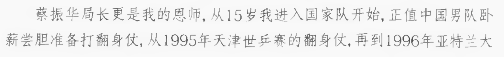
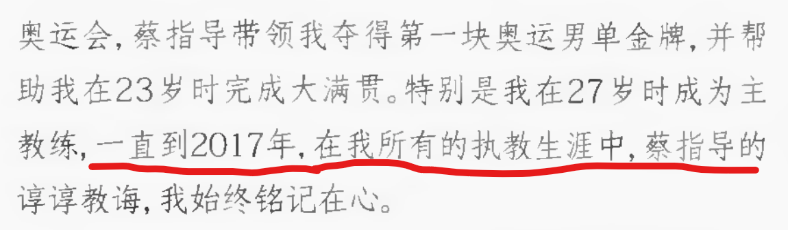
2.3 其他关于623的断想
先把一个从17年至今总有人说的观点拉出来遛遛。一直有人，尤其是某位明星球员的粉丝说这场罢赛违背体育精神、损害国家荣誉。首先我想说，如果那位6月22日出局的明星球员（他迟到30分钟左右、不做热身、又第一局在对方赛点退赛）不算违背体育精神的话，623罢赛当然不算。毕竟按照该明星某些粉丝的说法，对手等五分钟不到场直接判输，不尊重对手，那么那位球员呢？30分钟啊，623罢赛好歹是先发罢赛博再不到场的。其次，公开赛不升国旗，事关个人奖金和积分，觉得退公开赛损害国家荣誉的，那个对方赛点退赛的呢？而且不是都理解WTT强制参赛过多是不好的事吗？怎么到这个时候又强制一个公开赛和国家荣誉绑定呢？
然后我想讨论一下623究竟产生了怎样的影响？第一，是做了一个绝佳的自然实验，我不知道有多少这方面的人去研究过，但是对于乒乓球队这样一个历史悠久又处于时代漩涡的集体，如果我是相关专业的人我肯定走不动路，就想看看这样一个集体到底能不能离开某个强核心。2017年以及之前的二十多年，乒乓球队、至少男队一直处于强核心结构，先是蔡振华在球队建立起绝对权威，然后是刘国梁以不同的风格达成了类似的结果。这样一个集体如果换成弱核心，甚至多核心，会变成什么样子？正文第一部分我讲了一大段2018年是什么状况，事实上那就是这个自然实验的一个片面结果。之所以叫片面，是因为还杂糅着其他因素的影响，比如一轮游禁赛这种典型的外行管内行规则——刘国梁回归立马废止了这个规则，因为这样小将宁愿死在资格赛也不想一轮游，很可能造就一堆资格赛之神。但是反过来想想，如果还是强核心，外行领导内行的手还伸得到乒乓球队来吗？或许也不会吧。所以也可能是强核心对球队影响的一种传递机制。总之当年的乒乓球队离不开强核心，离开之后就是18年那种水土不服，强核心回归之后就有19年那种大刀阔斧严厉但是有效的整肃。但是这么一讲势必会让人想，现在的乒乓球队能离开强核心了吗？刘国梁已经辞职了，事实上他在的时候总教练、主教练挨骂都比现在少，尤其总教练李隼，就是说刘国梁在的时候乒丝骂人都有主心骨，何况各种情况下，刘国梁一直在做那个兜底的人，就像他在巴黎奥运会前说的，“该出现的地方我都会出现。”日后的乒乓球队是会走向多核心或者弱核心，还是会出现一个新的强核心？离了这个兜底的最后一根稻草，是会找到新的倚仗模式，还是会产生一个新的兜底人？我也不清楚，新秩序还在形成中。但可以预见的是，再出现一个刘国梁的概率已经越来越小了，乒乓球要回到乒乓球该在的位置，乒乓球队也该回到乒乓球队该在的位置咯。
第二，乒乓球队可能用这样的方式在一通大刀阔斧之中保留了一些话语权。事实上金牌至上的理念必然造成功勋球员功勋教练话语权很大，但是金牌至上也一直在被弱化，而623就是一次轰轰烈烈的金牌至上话语权的反扑。毕竟真禁赛罢赛运动员？那金牌谁拿，那可是当时的世排一二三。真不请刘国梁回归？那东奥怎么办？奥运争光毕竟还是体育口最关键的任务之一，尤其是乒乓球这种项目。
第三，无数偶然促成了一定的必然，623和18年那段去刘国梁时期的影响不是刘国梁回归那一通操作就能完全消灭的。就比如18年瑞典世乒赛，直播间的刘国梁认为对决赛二单的使用应该更激进一点，已经可以让他打一单了，但是最终，因为该球员本人没有找到足够的勇气，他还是选择了在当时队长的保护下完成比赛。我认为这件事影响很深远，中间疫情少了一次世乒赛团体，到他成为妥妥的一单的时候，他并没有他之前和之后那两位一单那样给队友足够的安全感（仅指打世乒赛团体一单时期），甚至在釜山世乒赛出现了抱怨教练组安慰队友不鼓励自己的话，倒不是说这样的话不合理，但是难免让人想，如果18年那场瑞典世乒赛他就被鼓励或者推动去打一单，以他当时的能力，是否有可能就形成了一次自我突破？从而影响之后的事业和心态发展，导致今天的现状也有所不同？又比如说，18年“期末考试”体现出的情况，对于备战东京来说已经相当严峻，所以作为以2020年东京奥运会（尚不知延期）为目标的教练组来说，在新老交替、老将保障和新人机会上的选择余地更小了，后来延期了一年，但在疫情期间比赛减少、上奥运主力年龄伤病问题的综合作用下，在小将这一层面肯定无法做足够的弥补。又因为小将锻炼不够，巴黎周期少一年，所以从巴黎周期一开始，从休斯顿世乒赛就看出教练组锻炼新人、磨练出新领军的强烈愿望，这又产生了更多的影响。如此环环相扣，无数偶然形成了连锁反应，其中17-18年这段人事动荡，和20-22年这段疫情，是我认为偶然因素当中最重要的两个。
第四，刘国梁个人的选择似乎也出现过犹疑，东京周期的他和巴黎周期的他在出镜率、主要动作范围等方面都又显著不同。东京周期他着力奥运备战，在很多事情上亲自挂帅（比如“史上最严教练组考核标准”）、亲力亲为，在东京看台上也喊过“他赢不了你”这样的话来直接鼓励运动员。但巴黎周期他的出镜率大大减少，主要动作范围向国际组织倾斜了一些，把更多直接决断的机会交给了马琳、王皓等一线教练员，所以我想，在巴黎之后他的辞职决定，或许是偶然因素综合作用的结果，也或许是一定的必然，是早就有想过的一种可能性。而我想如果早就想过，可能也有18年那段他说“有更多时间静下来思考”的日子产生的作用吧。
最后，我想说说623+18年刘国梁回归国家队这两件事合起来的一个效果，就是使得刘国梁把自己的名誉资本绑在乒乓球队——插一句他不走仕途名誉这一块就不用经营也不会有人帮他维持了，甚至换位思考你是领导，你会乐见一个风评好的时候能把正部级干部架在舆论的火上烤的人，继续风评好下去吗？回到本段第一句，如果布达佩斯或者东京大败，不知道有多少秃鹫等着就吸乒乓球队的血，此事在东京周期一些粉丝群体言行中可见一斑（今天已经发展出更多粉圈层面的秃鹫了）。到时候就是你们都想念他，想念到最后就这？那么他的各种功劳大概就都要被推倒，而不是时至今日连黑他都要塑一个事业有成的形象了。其实国乒长盛多年已经违背蔡振华、刘国梁都说过的那个6~8年一个周期了，尹霄在去年那条微博里提到的人才规律问题也是如此，竞技体育本身就有起伏、有周期性，把一个人架到他从前最高的成就的位置，并且虎视眈眈一旦他低落一点就能吸血，在竞技体育这个环境里几乎是稳赢不亏的。在这样一个情形下刘国梁没有做委屈得跑路的受害者，也没有做引导他人对抗体制的孤勇者，而是若有战召必回，选择继续在乒乓球事业上干下去。守江山并不容易，何况江山也曾多次有过片面失守，只是善战者无赫赫之功，巴黎叙事为代表的秃鹫思维只需要坐等人力无法扛住规律、扛住时代和基层的大势的那一段时间到来，就能稳稳地吸血吃肉、大赢特赢了。
3. 巴黎叙事的镜像特征
前言说了，镜像就是把别人对刘国梁做的事变成刘国梁对别人做的事，把别人的性格行为说成刘国梁的性格行为。这个部分里我们就来探讨一下，巴黎叙事中刘国梁形象的哪些特征是镜像的结果。
注：本部分不会像前面那些部分一样用“某位球员”代替，而是会直接指出姓名，如果你是该球员的球迷，只想看球不看人，请尽快离场，这会干扰看球。当然，你不能只在涉及自己心肝的时候看球不看人，上一句适用于纯不想关心乒圈事务的朋友。
3.1 谁在欺师灭祖
说到欺师灭祖我可太有话说了，刘国梁既是师父也是徒弟，说他献祭徒弟的我可以说他师父把他献祭了（见上文2.2，623第二种猜想），说他背刺师父的我上面已经反驳了他站牢苟的说法（见上文2.1 巴黎叙事的荒谬性）。那么我接下来要讲他徒弟们了，本部分就讲两个，张继科，樊振东。
为什么是这两位呢？因为他们是巴黎叙事最大的受益者。巴黎叙事洗白张继科的赌博、卖照片事件，把他04年退省队事件洗白且倒打一耙。巴黎叙事建构了关于樊振东的一种虚假叙事，即他是被逼退的，他还有可能回来，且他还有足够的能力，只要他回来就能拯救国乒。
先说张继科。前言已经说了，按照巴黎叙事说刘国梁欺师灭祖的逻辑，张继科在623就已经欺师灭祖了。但是我不赞同巴黎叙事的整个逻辑，因为站不站师父本质上是情分本分问题，至少到2019年，张继科和刘国梁的关系从刘国梁方来看是不错的，具体表现在刘国梁在时代栋梁说、风云会等多个采访中将他与马龙并提，寄希望于他去打联赛延长职业寿命，并借此推广乒超，继续在年轻人中扩大乒乓球市场的努力。但是显而易见，张继科并没有走这条路，就像我后面会说樊振东也没有走刘国梁说的路（真是一对笑面虎，两头乌角鲨）。张继科or其团队or其粉丝做了什么我在此不细讲，23年曝出来的能追溯到18、19年的法制事件也不细讲，具体的网上可查，反正比623好查。
这些都不讲，我只讲巴黎叙事本身有多么欺师灭祖。以2004年张继科被退回省队事件为例，巴黎叙事将此描述成乒乓球队固有的什么什么问题，还援引可靠性堪比贺晓龙的一位“知情人士”的话说他本来是跟大队员打麻将来着，以此推翻体坛周报的报道。这里存在一个显著的可信性对比问题，体坛周报没有任何理由以如此详细的报道来污蔑一个还未成名的小队员，按照巴黎叙事的说法，乒乓球队如果不想这件事闹大，应该尽可能给他一个模糊的罪名，而不是体坛周报所描述的：“2004年年底，来自山东颇有前途的新秀张继科，因为借某位乒坛大腕的银行卡参与博彩性质的“游戏”，输钱后无法面对残酷的现实而在外出比赛的过程中离队出走。几经辗转，张继科才被找到。（体坛周报2005年7月20日）”短短一段话把借钱、“游戏”、离队出走让队伍一时找不到这三件事情说得清清楚楚有头有尾，体坛周报何意味要如此详细地编一个故事污蔑一个陪大队员打麻将的没出名的小孩？
更可笑的是，本版报纸右上角（这一版本来报道邱贻可违纪来着，张继科这段是附带着说的，更好笑了，如果陪大队员然后为尊者隐那还不如不说）——“1995年6月 马文革、王涛、王浩等4人：在天津赢回旁落7年的男团冠军当晚，马文革、王涛、王浩等4人在酒店开房打麻将。4人在会上做出检讨，每人罚款5万。（引者注：报纸上写的王皓，按时间线和其他报道判断是笔误，应为削球手王浩） 1997年10月 孔令辉：八运会期间，孔令辉在比赛中不服裁判脚踢挡板，被蔡振华责令向裁判做公开检讨，并罚款2万。”
可见，只需把这张报纸略微移动一下，就能看到打麻将的处罚方式，和大队员犯错的处罚方式。马文革、王涛不是乒坛大腕吗？天津翻身仗当晚不是情有可原吗？不还是重重地罚了一道吗？何况2004年，那还是蔡振华当总教练啊，恋爱风波怎么罚的，就算觉得罚得不公平怎么不去找蔡振华？逮着刘国梁说？我后面会说，巴黎叙事中的蔡振华形象很有意思。
还有网友给出过其他证明，比如多年后领队的采访等。我想说这件事在张继科成名以后肯定是被乒乓球队有意遮掩了的，比如2011年刘国梁、张继科同上《非常向上》节目，刘国梁就将张继科退省简单描述为没什么大错，只是调整，为了压一压张继科的浮躁气。这很正常，因为乒乓球队需要一个个性鲜明的偶像形象，而张继科各方面都很合适，除了性格可能造成问题，和品格可能有不足，但是这两点在乒乓球队的管理下都可以控制在合理范围内，因此乒乓球队没有必要自毁长城（这是极重要的，球队或者教练没有动机去毁运动员，因为那是他们功绩的来源和证明，但是相反，运动员却有动机去诋毁球队和教练，这样能够塑造自己的凄惨、孤勇者形象）。
而在乒乓球队的刻意遮掩（甚至可以说是洗白）下，张继科是什么态度？反而不满意自己受过的特权，倒打一耙，在直播间公然发洗脑包，类似自己不知道肖战被调到女队云云——这件事详情请见2017年风云会（https://sports.cctv.com/2017/05/29/VIDEtRFLfV2Jf6cSe1i9nUVy170529.shtml），其中有详细讲肖战去女队的原因和来龙去脉。他这个人自己说的话都不可信，就是想要借诋毁球队、教练，来为自己的利益服务。
此外，巴黎叙事称刘国梁当时就要放弃张继科，但是按尹霄和刘国梁的说法，刘国梁一直在和尹霄联系，关注张继科的情况，另外尹霄是什么很辱没张继科的教练吗？那可是妥妥的功勋教练，张继科刚进一队是刘国梁组的，属于是师父把他送给了师爷，这还不够？另外，还是那期《非常向上》，刘国梁和张继科共同描述了张继科退省前刘国梁的临别赠言，说国家队的大门永远为你敞开，只要你能够彻底地改变自己，还说我相信你肯定会打回来的。不管你信不信这个吧，反正从结果来看确实是这样，从刘国梁到尹霄，没有亏待张继科，然而这样的培养下他不仅不回馈球队（即上文说的推广我国的职业联赛），而且反过来诋毁托举培养自己的人们，欺师灭祖，莫过如此。
更多关于张继科的洗脑包可以在当年的科龙粉丝大战中找到破解之法，比如什么调赛第一什么火锅帮。让我们进入下一位，樊振东。
关于樊振东同样有很多洗脑包，同样可以在粉丝大战中去找到破解之法，因此我也不去讲一些经典洗脑包了，重点说说和刘国梁尤其相关的这个退世排和强制参赛规则问题。
他退世排是2024.12.23，发微博是12.27，然后我们可以去国际乒联官网上找到2024.12.9召开的国际乒联执委会会议文件，刘国梁在做会议总结的时候，就已经提到强制参赛不合理，大概意思现在已经不是疫情那个时候了，疫情那时候比赛少为了顶尖球员参赛搞强制参赛是合理的但是现在赛程密集，这个规则也该修改了，最后一个从句说尽管他明白一定程度的强制是应该的。
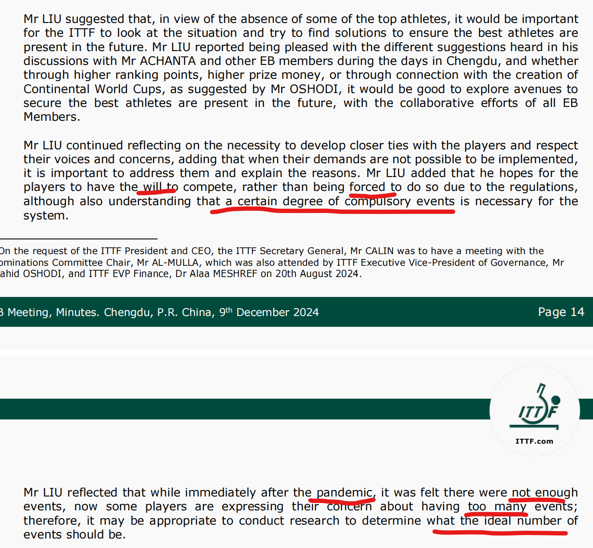
再去看2025.1.31的wtt工作组会议，上面刘国梁提了改强制、提高奖金等好几个点。其中，其中去看更改强制参赛这个点（也包括赛程、奖金等），和他12.9说的一脉相承。也就是说，中间发生的樊振东陈梦的事情没有改变他的观点，他早就是这样想的，并且在平台上也是这么说的。
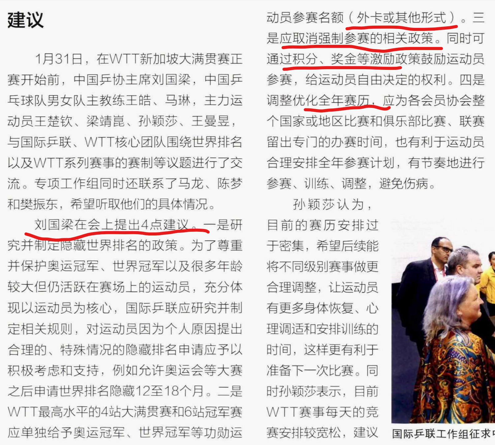
所以樊振东或其团队或其粉丝讲什么“为众人抱薪”（大约是因为自己享受了草台班子的特权所以变成了为别人），我感到一阵颠倒的荒谬。他在这件事上起的最大作用就是把next meeting从25年2月提前到了1月（12.9文件里提到next meeting不出意外在2月，实际上加开了一次）。没有他，大概率刘国梁也有自己的节奏去推动这个改动。他有用，但没那么有用。
更重要的是，他都不知道罚款规则是什么时候有的，他以为是才有的，实际上一直都有。我大胆怀疑他就是从国家队或者什么地方知道的有这个事，然后没听明白就急匆匆做了话术。（说起来，似乎他的微博意思是新搞了个规则逼退他，🤣我只有这个表情包。）
他这样做一举多得，第一是把刘国梁从一个改革推动者变成了大反派角色。巴黎叙事中这件事确实相当战犯，刘国梁何辜要被你抢了功劳又踩到对面！第二是营造了自己薛定谔的退役的人设，众所周知现役和退役商业价值大不相同，类似的要退不退以及造谣“被逼退论”张继科也用过。我一开始觉得樊振东是张继科的灵魂追随者就是因为这个，后来发现他还是迭代了打法的，张继科该跟不上时代了。第三是踩一脚wtt，虽然wtt是职业比赛、乒超德甲是商业比赛这个区别是固有的，虽然粉丝手搓金满贯是不舍得扔掉wtt的，但是wtt还是一点不重要的比赛，还是资本，是逼退樊振东的罪魁祸首之一（突然想到想找樊振东粉丝的主流逆天话术是不是找吴敬平微博就够了）。至于再往深处的什么利益派系就自由心证了，我一般还不去提。
总之就这一件事，足以见得其颠倒黑白的能力，以此作为自己薛定谔的退役的支点，并以此作为污蔑刘国梁的一个支点。除了欺师灭祖，我也很难想到其他更好的评价，巴黎叙事还是有些文字能力在其中的。
至于我为什么会说巴黎叙事对于樊振东是一个虚假叙事（这相对于一些其他粉丝群体维护的是片面叙事）——其实他（还是叠甲，或其粉丝，或其团队）重点维护的就是两个点，第一他是被逼退的，第二他还是世界最强，前者决定他不是不担责跑路、他有苦衷，只要做到什么什么他还会回来（反之他不回来一定是xx主体还有什么什么问题），后者决定他回来还很有价值，只要他回来他就可以拯救中国队闪耀洛杉矶。但是事实上，逼退论在我看来就是张继科的话术平移+退世排这个新打法，已经2026了，老铁们我们不在2024了，第二点也该重新看看了。他能够保持水平自然更好，但是如果不能，强求这一点只会适得其反。本身德甲联赛是商业比赛，马文革在德甲也常年前三，还曾经带领一个从来没有拿过冠军的俱乐部在第二个赛季就成了三冠王，在德甲的成绩就不能作为是否能胜任国家队资格的参考，而全运会以内战为主，就今年的世乒赛来讲，和全外战的男团也不搭边。而且从去年7月的采访来看，就像我前面在623影响中所说，樊振东的心态始终是一个没有解决的问题，如果说张继科的性格是知道错但无法控制自己走错，那么樊振东的性格应该是总觉得自己没错，错的是别人是世界。这里我还没有去谈其他私生活、利益纽带之类的东西，我只看水面以上的。
综上我想，最能体现樊振东最好的道路（或者说刘国梁曾经可能期待过的道路，毕竟樊振东出国打球是与刘国梁沟通、获得后者理解和批准的，见樊振东去年7月的凤凰网采访）应该是刘国梁在17年鲁豫有约说的这个：
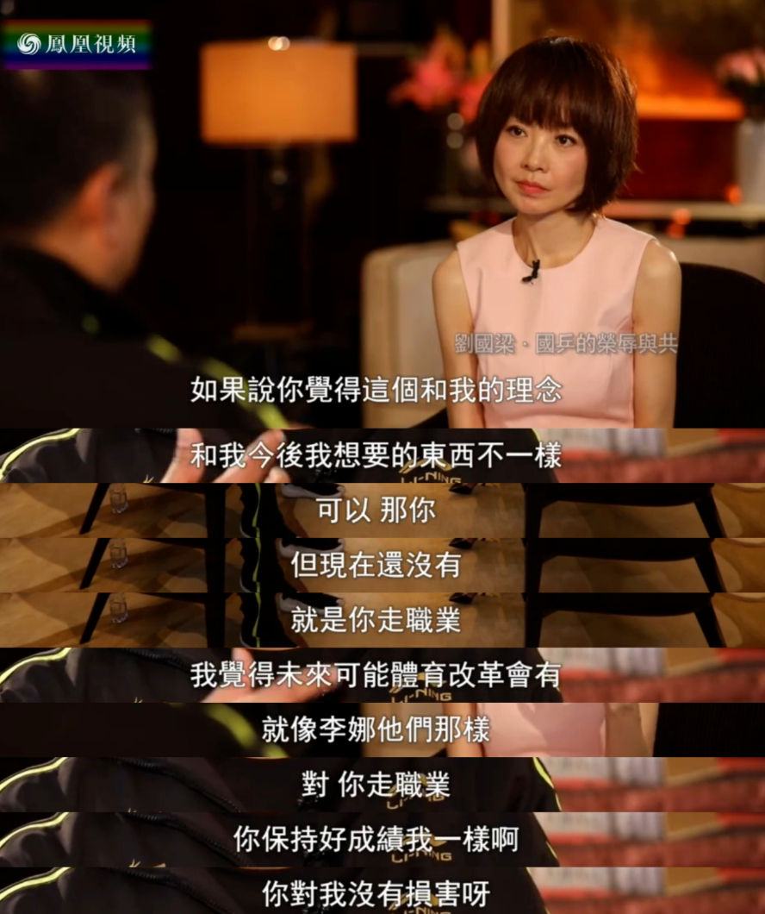
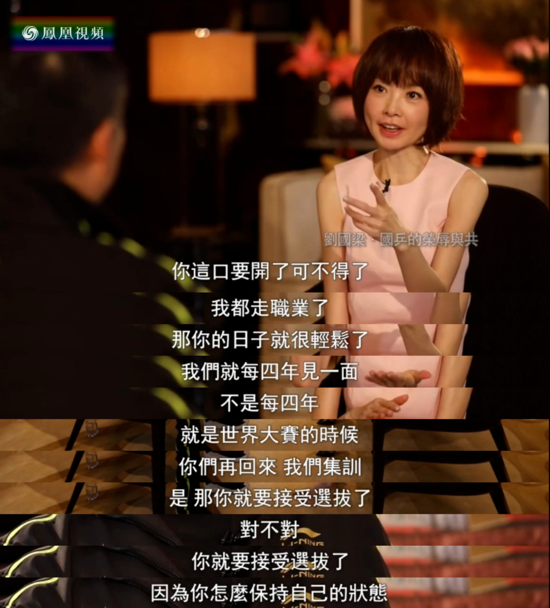
不想在国家队待，又想打大赛，就可以走刘国梁说过的这个路，通过联赛保持状态，大赛前接受选拔，是刘国梁早在总教练时期就讲过的想法，只是一直没有人会去实现这个。樊振东正好有一个绝佳的机会，可惜，和张继科一样，把项目的期望寄托在他们身上你就闹心吧。
对于樊振东巴黎以后的种种行为，我还是重复前文那句话，欺师灭祖，莫过如此。
3.2 谁在一手遮天
这个点我不会细讲，只是提炼一下巴黎叙事中关于一手遮天的说明，一手遮天不是简单的刘国梁对球队有着绝对领导力，巴黎叙事想更进一步，说他能把这个球队用于自己的利益。那么刘国梁用于了什么利益？不要翻来覆去就是前面说过的那些运动员了好不好，他们的话术用现役丝的话都能打回去，没必要在谈论刘国梁的时候多说。我想说真正有可能曾把球队用于自己的利益的，按照第二部分关于623的猜想，应该是蔡振华。
即使蔡振华去了体总，他依然兼着可以管乒乓球的职务，而且总主教练都是他的弟子，刘国梁连请假陪老婆生孩子都要请求蔡振华的批准，就算乒乓球队都服从刘国梁又如何，刘国梁服从蔡振华啊。所以蔡振华能放心地把乒乓球队作为斗苟仲文的一张牌，本质上是他真的能一手把乒乓球队的天给遮了。
当然，这个只是基于关于623的第二种猜想，仍然是猜想。
不过国乒皇帝的说法确实也不算难听，只是乒乓帝王可能更好听一点，在此送两张图作为对巴黎叙事叫他皇帝的注解：
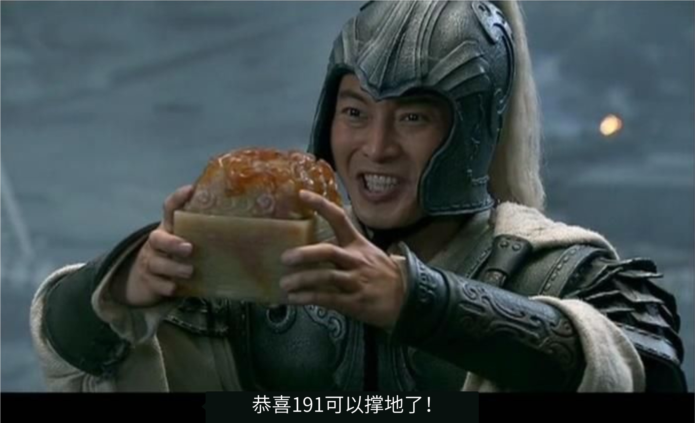
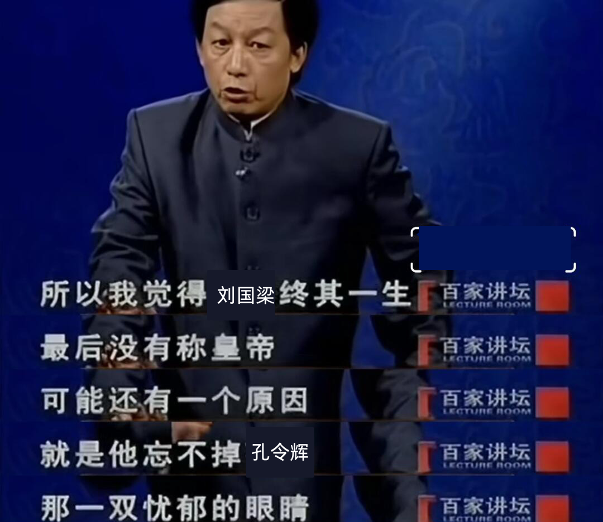
3.3 谁在逼退冠军
有没有看到这里的朋友以为我要说老蔡逼退小刘？并不是，我还是觉得你情我愿的事情能叫逼吗，刘国梁退役那是多方面因素作用的结果，老蔡劝他退役和刘国梁劝秦志戬退役其实相差没那么大，毕竟再打下去也很难达到他们的目标了。
我想说刘国梁作为冠军教练和功勋管理者被逼退的这几年。巴黎叙事从2024年9月左右开始大批量出现，并在各大平台传播，乒乓球或者说整个体育界的覆盖面不可能达到大部分人都能去辨别和想要辨别真相的地步，因此巴黎叙事的这个营销强度就是要明晃晃地颠倒黑白，就是要把刘国梁往身败名裂上去整。事实上刘国梁在2024年12月的九派新闻采访中就提到近些日子请假检查身体，虽然不到身败，但是常年的高压已经足以让他两鬓斑白，伴随着三高等慢性问题，他这个在运动员时期没有因为伤病而断了运动员路的人，却因为身心消耗几乎断了教练员和管理者的路（教练生涯末期提到压力让人沉闷、想要换个安静思考的环境等）。至于名裂，呵呵，在第二部分开篇提到今天是为三英平反48周年。我时常看着糊到脸上的一些话术，想现在相对于三英的时代究竟有哪些差别。我想，人性的恶、贪、愚等等都没有本质的改变，改变的只是环境。《国球传奇》中对傅其芳被关押殴打的事情有这样一句描述：“环境的恶会诱发人天性中的恶，造反派中的一部分人开始暴力成性，慢慢到了嗜血的地步。”是环境变化了而不是人性变化了，是舆论转化为物质力量的能力变弱了而不是舆论本身变了。刘国梁从2024年9月提出辞职，到2025年4月辞职成功，中间分明有的是时间去查账，有的是时间去处理广大乒丝的举报信举报电话，但最终刘国梁得到了体育总局的高度评价：
多年来，刘国梁兢兢业业、辛勤付出，带领中国乒乓球队在国际赛场上屡创佳绩，不断提升中国在世界乒乓球领域的话语权和影响力。
这三句话对应了苦劳、教练功劳和不止于一个功勋教练的功劳这三个层次，是名副其实的高度评价。许多人自以为正义，或者至少表现得很正义，却没有跳出人性的贪、愚、痴，让真心和假意混杂在一片荒谬的舆论场中，折射出舆论和人性固有的荒唐。
而这样的荒唐不可能没有推手。我无意去辨析究竟谁是推手，为什么要作推手，我只看水面以上的东西，知道有推手就行，否则这样的舆论很难形成。既然有推手，那么这个推手一开始的目的就是要刘国梁身败名裂，就是要他离开，如果他傻一点，或者贪一点，很可能就不会有当下这样老婆孩子热炕头的新的美满生活了。
呵呵，究竟谁在逼退？谁在被逼退？镜像世界的底色就是荒唐啊。
3.4 谁在重用嫡系
前面说了只看水面以上的东西，让我来说谁在重用嫡系，我倒是有猜想，但在水面底下，我还得过至少一年才能确定。那么返回来说一下有人对刘国梁重用嫡系的论证吧，一个是皇族理论，用于运动员，另一个是京队理论，用于运动员和教练员等。
皇族我真的很难去评价，我只能说去问现役丝吧，现役丝有时候会维护一个片面的叙事，但总比错误的叙事要好。乒乓球队的名额来源真的已经是相对公开透明的了，至少在刘国梁时代这些都能找到，那么你说某个人为什么打不出来，某个人为什么受到重用，能不能先看看他的成绩和比赛中体现的气质再说呢？另外，我个人有个猜想，刘国梁对于某种性格的人应该有一定的偏向，这个偏向不是说他会给这种人更多的资源，事实上这个在刘国梁自己建立的体系里是不太可能的，我们从乒乓球队打出来的主力也能看出，性格分配总体是比较丰富的，各种对比都存在。但是无论是刘国梁的开山大弟子，还是他开始培养体育明星时的种种期望，都能看出他应该会认为某种性格的运动员更有可能在关键时刻成为教练可以依靠的球员。但是这一切还是回归到端水这个点上，刘国梁教练、乒协主席的绝大部分职业生涯都在端水的位置上度过，所以他个人的偏好似乎也不是什么很重要的事，毕竟因材施教嘛。
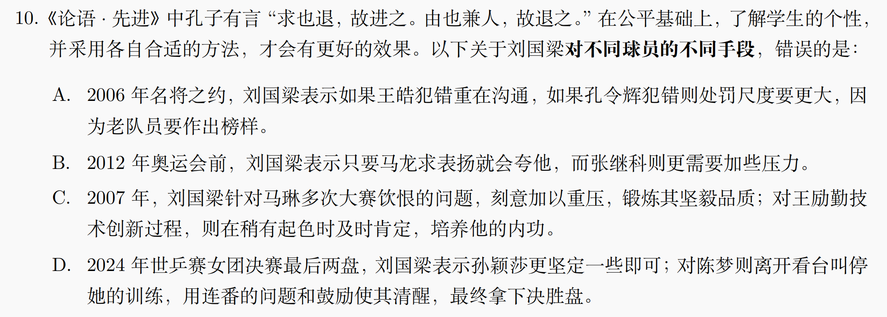
然后是在教练员、管理者位置上的所谓嫡系，emm我真的不知道怎么来判断不是嫡系，有的人一会儿是嫡系一会儿不是的，就像刘国梁一会儿结党营私一会儿众叛亲离。比如说他把自己师父尹霄弄去管青训，或者他把某个和自己运动员时期关系不错的人弄去当什么教练或者秘书长什么的，但是就像我在第一部分刘国梁重回国家队的地方就讲过的，乒乓球领域天降猛人的概率很低，大部分时候还是在运动员时期或者教练员早期就为我们所熟知的人里面选择，因为这样的人往往对于这项运动的理解和对于项目情况的了解都比较强，也即是“和刘国梁熟悉”与“胜任某个相关职位”的相关性为正。所以有的人就颠倒黑白啊，有没有可能是这个人本身能力强才和刘国梁很熟或者越来越熟，而不是刘国梁和他熟才让他当什么。另外，大家都熟悉这也减少了管理成本嘛。
3.5 谁在背刺搭档
写到这里有点不想再写了，有的人平等地背刺每个人，关搭档不搭档也没什么事了。非要说的话，有那么几对CP，>=2对，是明显地有炒作和提纯的，背刺CP应该也算背刺搭档吧，我就不多说了。
总之说刘国梁背刺搭档就是背刺孔令辉嘛，第二部分也说了，孔令辉事件就是搞刘国梁的，刘国梁脑子全喂了乒乓球也不至于搞这种两败俱伤的事情，不过是某位欺师灭祖的人想要给自己洗白拉的复仇者联盟。
3.6 谁在权钱交易
在3.3中我提到了关于刘国梁的一些颇具老一辈打法色彩的舆论风波，其中权钱交易是提的最多的。我曾经试着对一个这种阴谋论进行了深入研究https://weibo.com/9015381942/QviYkpnKs，但是毕竟辟谣没有造谣快，这种翻来覆去也不过那几个东西，威海，河南，牢苟，WTT。其中刘国梁和牢苟的关系我认为第二部分已经说得很清楚了，刘国梁如果和他有任何权钱关联，以刘国梁的咖位没有一点理由不被一起下狱，这一点是相信组织还是相信乒丝大家自行把握。至于威海和河南，我上面那个链接就是关于河南的，还是说，这种程度的问题在刘国梁卸任的时候势必查过，17年一次，25年一次，多的是人觉得刘国梁要被查下去，结果夜骂到明明骂到夜刘国梁还是毛事没有。如果组织真的判定他有事，那当然是相信组织，如果组织给了他高度评价，没有查出问题，那还在这里自我感动自我洗脑意义何在呢？
至于WTT，我也写过一个相关的https://weibo.com/9015381942/Qvkyc5Mwr，不想重复当年的来时路了，感兴趣的朋友可以自己去看那里面整理的链接。
回到小标题，谁在权钱交易？这个问题和重用嫡系一样，我轻易是不能回答的，所以我把自己关于3.4和3.6的猜想统称为关于反镜像世界的狂想，因为现在还不能确定其是否存在以及我的猜测是否正确。就像把刘国梁的是非评价交给组织，把功过评价交给江河万古流，我也把类似的猜想交给时间。
3.7 谁在煽动饭圈
想了半天还是把这个作为单独的一个部分提出来。犹豫的原因是具体点名总觉得又涉及一些水下的内容，感觉又和3.3这些有一定的重合。但是我这里依然用巴黎叙事的一个逻辑，就是简单的存在饭圈并不是罪过，要煽动饭圈、控制舆论才是罪过。
那么还用说吗？从2016年国乒在年轻人群体中大火，然后张继科粉丝率先实现饭圈化，之后围绕着刘国梁的饭圈化攻击就从来没有断过。至于巴黎之后，不妨上B站搜刘国梁这三个字，然后把筛选时间选为2009~2024年8月前的某一天，看看效果，再把筛选时间截止变成2025年5月看看效果，再变成不限时间看看效果，有的事情真的一目了然。这也是我为什么会谈“巴黎叙事”而不是东京叙事、里约叙事的缘故。用一句网络语，有的群体太典了。
饭圈的基本逻辑是要维护偶像的一切行为，同时攻击ta身边其他可能构成威胁的人物。换句话说，偶像的错误一定要骂别人，偶像的成功一定没有别人的贡献。前面说过，刘国梁回归后乒丝骂人都有了主心骨，要进行这样的饭圈叙事，任何一家运动员粉，也包括曾是刘国梁弟子的教练员等的粉丝，都有充分的动机对刘国梁进行抹黑污蔑、造谣谩骂。而这也正是已经持续多年的事实。
不过很有意思的一点是，饭圈化以来的这十年，乒丝显著地从争论刘国梁爱谁变成争论刘国梁恨谁。很多洗脑包说到底就是想说刘国梁恨某个人，不想ta好，但谁来懂一下这真的很好笑。如果要我来做个总结的话，我会说刘国梁的恨比他的爱更难得到。
至于饭圈互相说对方是饭圈应该是娱乐圈已经玩剩下的东西，乒乓球拿来玩也不是什么稀奇的，这个倒和巴黎叙事没有很大关系。以下贴两张先前写的，作为我对于类似内容的一点想法吧。
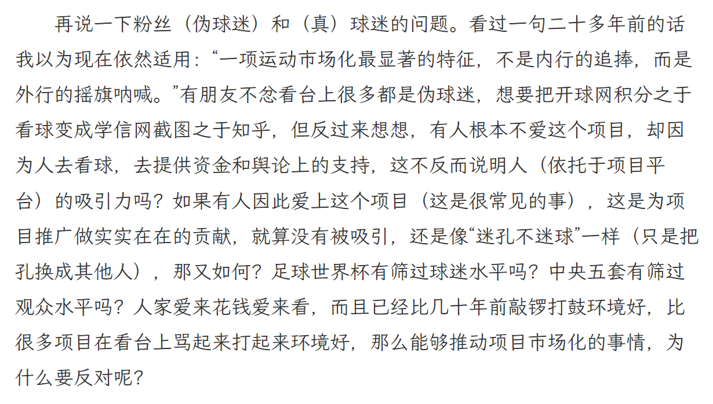
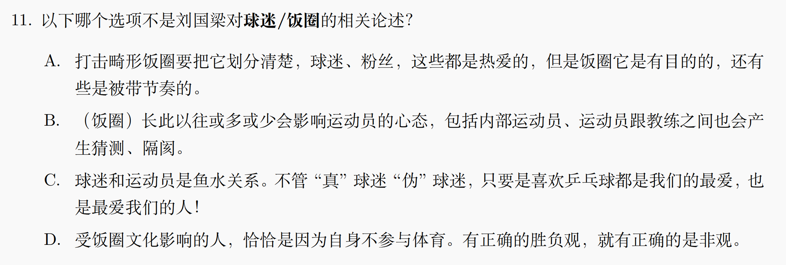
4. 关于反镜像世界的狂想
之所以叫狂想，就是因为它不像前面三个部分已经说过的内容那样，基于事实和逻辑的推断，而只是我根据镜像原理的猜想。比如我猜想他们认为刘国梁623是欺师灭祖的原因，是实际上有人在这个过程欺了刘国梁，于是我发现了3.1的内容，我猜想他们认为刘国梁逼退了谁谁谁，是因为谁谁谁或其背后的势力在逼退刘国梁，于是我发现了3.3。其实有那么一些人就是这样，把自己的脏水泼到别人身上，好消息是也知道这无耻，坏消息是ta还能更无耻。
那么很难不让人想象，巴黎叙事里的那些获益者，尤其是除了我说过的两位以外的获益者，是否也参与了反镜像的构建？我先前提过老蔡的形象很神奇，但是我实在是分不清老蔡到底是被拿来当枪使（相似的一些现役丝也会拿刘国梁当枪使，只是规模远不如巴黎叙事），还是这也是反镜像世界的一部分。所以我称之为狂想。至于其他获益相对没有那么多，但也从中受益的，究竟是主动的还是被动的？只能付之狂想。
巴黎叙事还有别的许多内容，不过我上面说的就是比较本质的，而且真的把上面的主要内容看完，我觉得更大的收获应该来自于对巴黎叙事获益者的再认识，而不是对刘国梁的再认识。其实只要破灭了一点小小的滤镜，很多事情的推断和偏向是顺理成章的。
当今对刘国梁的诸多诋毁也多有巴黎叙事之外的内容，甚至上述一些内容，有朋友说根本不是巴黎以后才有的，早就有了，是的，但是巴黎之后它们被合为一体构成了一个处处是漏洞但是发现漏洞需要一定的了解的这样一个完整的结构，或者说没有结构，只要安的罪名够多，大家的思维就会被占据，然后懒怠地被洗脑。但是我觉得巴黎叙事最有代表性，而且许多传播巴黎叙事的人是有粉籍的——这就是舆论传播中常见的树状结构，越接近根的越可能带有粉籍，越边缘的越可能是被岁月史书洗脑但传播力不强的路人。既然有粉籍，就有立场，就越可能从动机出发理解其理论的构建逻辑，这会比一些单纯来自于饭圈或者普通阴谋论爱好者的诋毁要更加有研究的快感，“镜像”就是这么来的。
总结一下，巴黎叙事就是一场酣畅淋漓的是非颠倒，很有趣的是有那么一些人，捧他的最好办法是把刘国梁做的事安在他头上，踩刘国梁最好的办法是把他做的事安在刘国梁头上，世界之颠倒乃至于此，真是令人发笑。